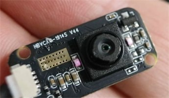
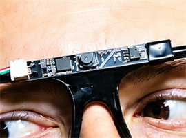
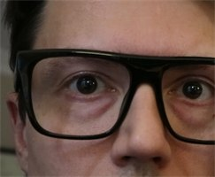
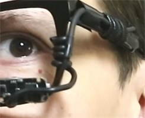
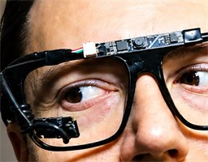
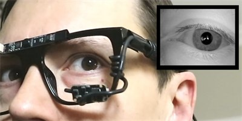
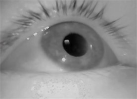
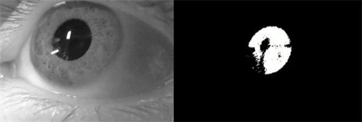
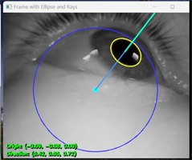

In this tutorial, I'll show you how to build a completely mobile eye tracker using an Orange Pi 4 Pro or Raspberry Pi. I'll go through the parts, show how to set up and calibrate the cameras, and cover a few modifications that help you get better tracking results. The system can be mounted on glasses, head-worn displays, or helmet systems for projects like gaze analysis and eye-tracked costumes.
To help support this software and other open-source projects, please consider subscribing to or joining my YouTube channel.
Building the Mobile Eye Tracker
Step 1: Gather the parts
To get started, you'll need an IR eye camera, a front camera, a pair of glasses with the lenses removed, a Pi board, and a battery bank with a USB-C cable. The battery needs to supply 5 volts at 5 amps for this setup; check the output of the port and cable you plan to use. Add an IR pass filter if you'll use the tracker near windows or sunlight.
Orange Pi provided the board used in the video free of charge. No monetary compensation was received, and all opinions and testing results are my own.

GC0308 IR eye camera.

Front camera for the scene view.

Glasses frame used to hold the cameras.

Soft wire for mounting.
Step 2: Mount the cameras and secure the USB connections
Wrap soft wire around the eye camera and its cable, then attach it to the glasses frame. Keep the mount firm but adjustable so you can position the camera until your whole eye is visible. Attach the front camera so it looks out in the same direction as your head. The original DIY eye tracking tutorial and calibration video show the mounting process.

Camera mounting example from the original glasses build.

Adjust the eye camera before calibration.
One issue to watch for is the give and play in the Pi's USB ports. Movement can cause dropped frames. Bind the front and eye camera USB connector housings together with a zip tie, then use a rubber band to secure them to spacers or screws on the Pi. Leave enough slack in the camera cables so turning your head doesn't pull on the connectors.
Step 3: Set up the Pi operating system and Python
Install a desktop Linux image supported by your exact board on a microSD card, then boot the Pi with a monitor, keyboard, and mouse connected. Use Raspberry Pi OS with a desktop for the Raspberry Pi, or a compatible desktop image for the Orange Pi 4 Pro. The tracker opens two OpenCV windows, so run it in a graphical desktop session.
On a Debian/Ubuntu-based image with these packages available, open a terminal and install Python, NumPy, GUI-enabled OpenCV, and the camera utilities:
Download Orlosky3DEyeTrackerFrontCameraPi.py into a project folder. You can open it in the board's text editor or a Python editor if you want to make changes. This version is standalone: it doesn't need Tkinter, OpenGL, or any of the desktop tracker's helper files. Avoid headless OpenCV packages, which cannot display the camera windows.
Step 4: Find the cameras and run the tracker
Connect both cameras and list the video devices:
v4l2-ctl --list-devices
Choose capture devices belonging to two different physical cameras. One USB camera can expose multiple video nodes, so two different device numbers alone aren't enough. Open a terminal in the script's folder and run:
Replace 0 and 2 with your camera indexes; device paths such as /dev/video0 also work. The windows are titled Pi Eye Tracker and Pi Front Camera. With a camera window focused, press 1 to cycle the eye camera or 2 to cycle the front camera. With only two cameras, either key swaps their assignments.
Set the image orientation before calibrating. Press E to flip the eye image vertically, or set startup options such as --eye-flip vertical --front-flip horizontal. Each flip option accepts none, vertical, horizontal, or both. Changing cameras or flipping the eye image clears calibration.
Step 5: Position the eye and build the eye model
Adjust the mount until the eye is clearly visible in the eye window. The script finds the dark pupil region, fits an ellipse, and estimates the eye model as you look around. Give it a few moments and move your gaze in several directions until the model is ready. Try to keep the camera from moving relative to your eye.

Eye positioning example from the original tutorial.

Pupil detection example.

Eye model illustration from the original tutorial; the Pi interface differs.
If pupil detection is unreliable, first check the camera position, focus, and reflections. You can also adjust the pupil threshold offset at startup with --threshold 15; 15 is the default and accepted values run from 0 to 255. Press X to reset the model and calibration if you need to start over.
Step 6: Calibrate gaze to the front camera
In the front camera window, move your fingertip until it lines up with the red target in the image. Keep your head still, look at your actual fingertip, and press C. Repeat for all five targets in this order: center, top, bottom, left, right. Keep the camera window focused and the tracker unpaused when capturing points.
The first captured point freezes the eye model so all five samples use the same eye sphere. Once calibration finishes, the red dot follows your gaze in the scene view. If the script reports an invalid sample or a degenerate fit, follow the message and repeat calibration.
Press C after completion to restart calibration, then press it again to capture the first new point. F freezes or resumes eye model updates; resuming updates clears calibration. Recalibrate whenever the glasses or camera move. This maps gaze directions to front-camera pixels; a monitor, VR display, or a different surface needs its own calibration.
Step 7: Record and use mobile eye tracking
Once both views are working, power the Pi from the battery bank and secure the board and battery for mobile use. Keep cables supported so walking or turning doesn't move the camera mount. The program still needs a desktop session for its windows and keyboard controls; it does not automatically start or calibrate at boot.
Press R to start or stop paired AVI recordings of the annotated eye and scene views. Files are saved in the recordings folder beside the script, or use --record-dir to choose another folder. Recordings use a fixed 30 FPS timeline, separate from the live processing speed. Space pauses or resumes tracking; Q, Esc, or closing either camera window exits.
For your own gaze application, the Pi script keeps the eye result in memory and uses Calibration.point(result) for scene pixel coordinates. It does not write the desktop version's gaze_vector.txt file. You can modify the script to log timestamped gaze data or send it to a costume controller or another application.
Step 8: Reduce reflections near sunlight
If you plan to use the tracker near windows or sunlight, add an IR pass filter over the IR camera lens. It helps by filtering out much of the visible spectrum. It won't completely remove sunlight reflections, so check the pupil view again and adjust the camera angle if needed.
This gives you a portable DIY eye tracking system!! Stay tuned for the stereo version and updates on a new infrared camera!